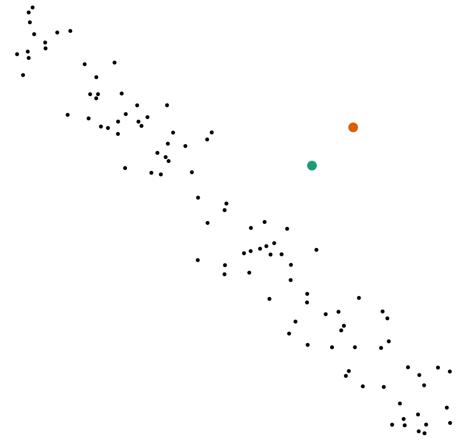
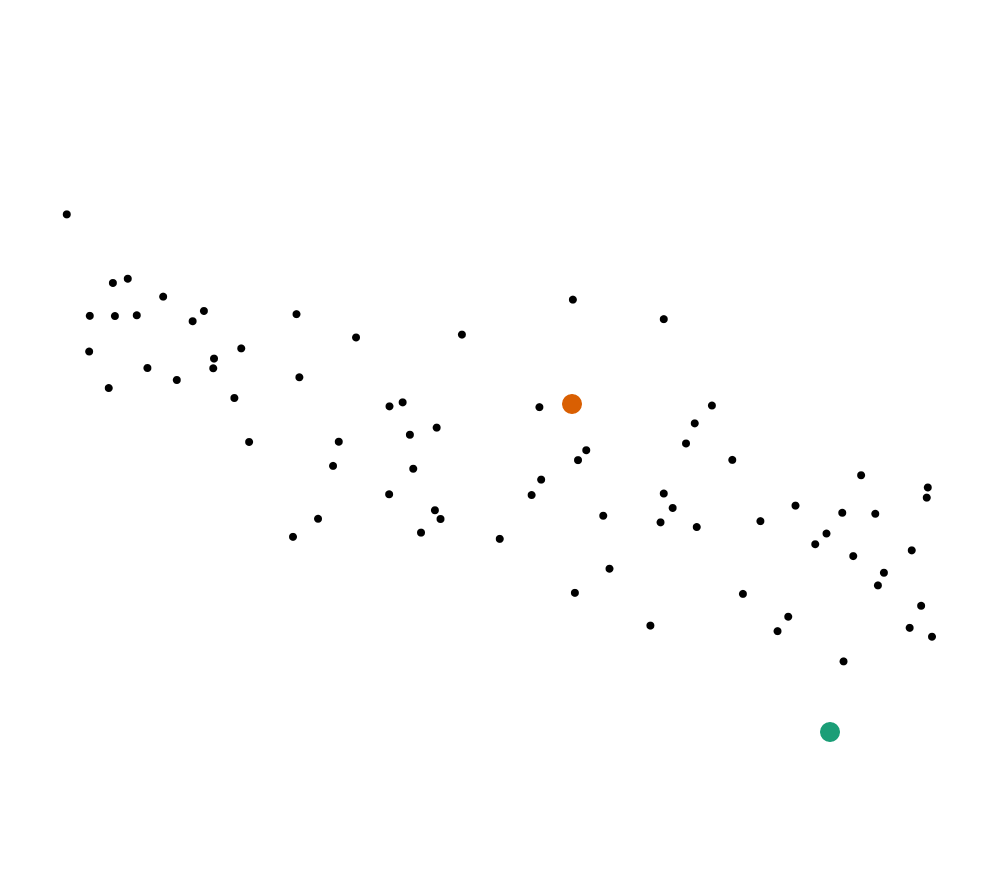
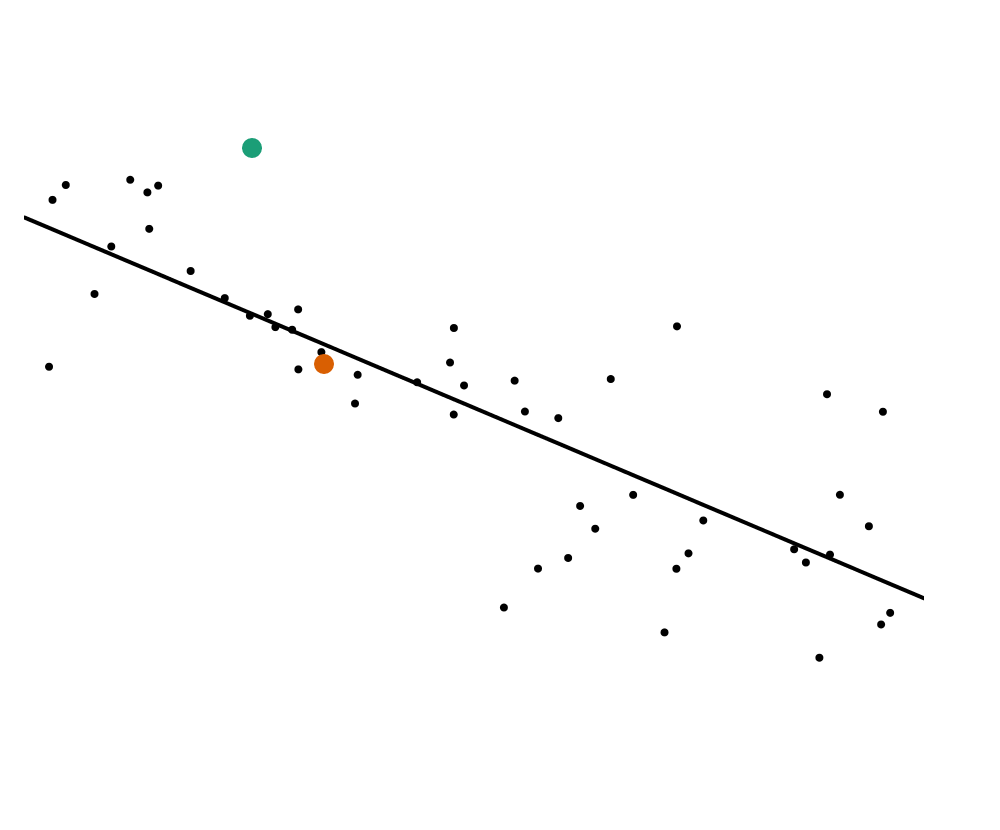

In this study, you will be shown a series of scatterplots of data. Each scatterplot contains a set of points representing a fictional dataset, showing a relationship between X (horizontal position) and Y (vertical position). On each scatterplot will be two points, green and orange. You will be asked which point is more likely, given the data. By this, we mean that the data shows a relationship between X and Y. Not all Y positions are equally likely given a particular X value. The likeliest point is the point that has a vertical position that is most similar to the general trend of the rest of the data points. Figures 1 and 2 show examples of these judgments.
| Figure 1 |
|  |
| The green point is more similar to other points in the scatterplot than the orange point. It's Y (vertical) position is more likely given its X position. |
| Figure 2 |
|  |
| The orange point is vertically closer to the other datapoints. Its Y (vertical) position is more likely than the green point's position. |
For some images, you will see a trend line. The trend line shows the overall relationship between X position and Y position for the dataset. Figure 3 shows an example of a trend line, and how it might assist in making judgments about the likelihood of vertical position. In some cases, you may only see the trend line, with the data hidden.
| Figure 3 |
|  |
| A scatterplot with a trend line, showing the general relationship between horizontal and vertical position in the dataset. The orange point is very close to the trend line, indicating that it is more likely than the green point. |